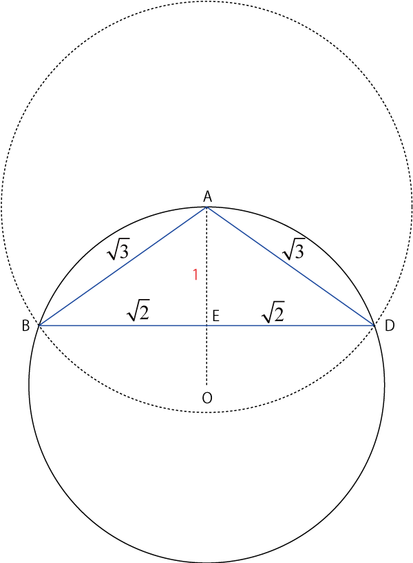
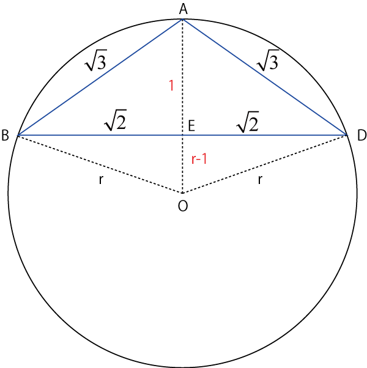
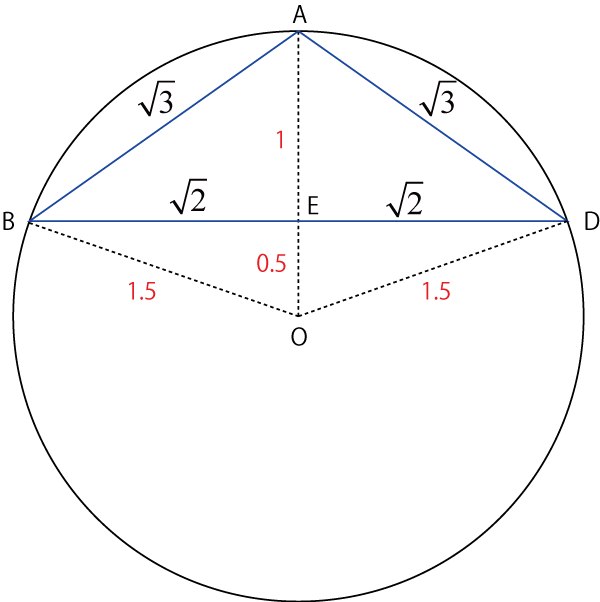
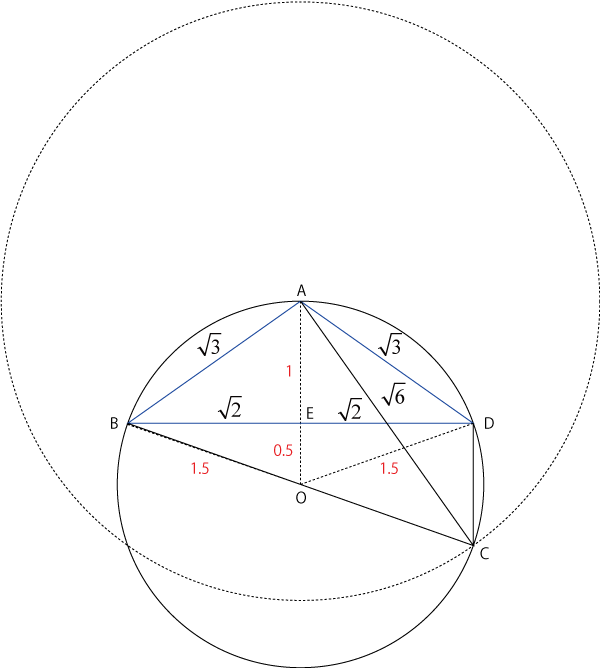
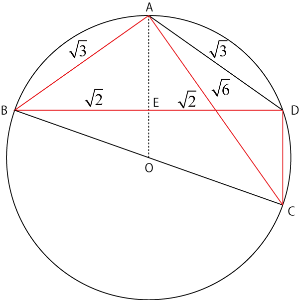

ドラゴン桜，図形問題-01
ドラゴン桜，もう20年前近くのコミックですが，今見ても面白いですね．
その中で（巻数は忘れちゃいましたが．．）図形問題があり，気になったので解いてみました．
ネットを検索しても関連記事は見つかりませんでした．．．
・問題
問題は，
円に内接する四角形ABCDで，
\( \Large AB = AD = \sqrt{3}, \ BD = 2 \sqrt{2}, AC = \sqrt{6}, \ cos \angle ABC = \frac{\sqrt{3}}{3} \)
である．このとき，CD = ???
という問題で，教師は，
図を描いても図が正確でないと線の長さがわからない
焦らずに丁寧に図を描こう
見ただけで答えが推測できる
CDは整数で2よりも明らかに小さいから１だ
と話しています．しかし．．．．
見ただけでは答えが推測できない．．．．
ので，まずは正確な図を描いてみました．
・作図

まずはBDの位置を確定します．Aを中心に半径ルート3の円との交点がB，Dとなります．
次に三角形ABDを考えます．これは明らかに二等辺三角形なので，円の中心から伸ばした線による直角三角形の高さAEは，１，となります．
つぎに，三角形BEO，DEO，について考えます．高さは，r－1，なので，

\( \Large r^2 = (r-1)^2+( \sqrt{2})^2 \)
\( \Large r^2 = r^2-2r+1+2 \)
\( \Large 2r = 3 \)
\( \Large r = 1.5 \)
となります．

つぎに，Aを中心に半径ルート6の円との交点がCとなります．

ドラゴン桜の図と比べるとだいぶ異なりますね．．．．図を正確に描く，と言っているのに．．．
四角形ABCDの形が妙にきれいなのが気になりますが．．．
・余弦定理，円周角の定理

余弦定理より，
\( \Large \sqrt{3} = (\sqrt{3})^2 + (2 \sqrt{2})^2 -2 \cdot \sqrt{3} \cdot 2 \sqrt{2} \cdot cos \angle ABD \)
\( \Large \sqrt{3} = (\sqrt{6})^2 + CD^2 -2 \cdot \sqrt{6} \cdot CD \cdot cos \angle ACD \)
したがって，
\( \Large cos \angle ABD = \frac{2}{ \sqrt{6}} \)
\( \Large cos \angle ACD = -\frac{3+CD^2}{ 2 \sqrt{6} CD} \)
円周角の定理より，
\( \Large \angle ABD = \angle ACD \)
したがって，
\( \Large \frac{2}{ \sqrt{6}} = \frac{3+CD^2}{ 2 \sqrt{6} CD} \)
\( \Large CD^2-4 CD+3 = 0 \)
\( \Large (CD-3) (CD-1) = 0 \)
\( \Large CD = 3, 1 \)
となります．
\( \Large cos \angle ABC = \frac{\sqrt{3}}{3} \simeq 0.577 < \frac{ \pi}{4} \)
なので，\( \Large \ \angle ABC \)は，鋭角となります．したがって，AB > CD，となるので，
CD = 1
という答えとなります．
次ページにいろいろと気になる点を話していきます．